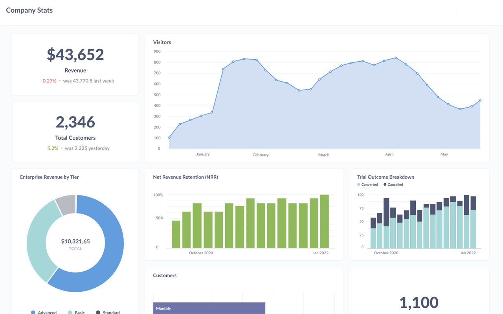

۰۱
تحلیل داده و گزارشگیری
همیشه بدان کسبوکارت چه وضعیتی دارد. فروش، سفارشها و عملکرد کسبوکارت را در گزارشها و داشبوردهای ساده ببین.
- داشبورد فروش در یک صفحه
- پرفروش و کمفروش
- گزارش آماده برای تصمیمگیری
هوشیار · دستیار هوشمند کسبوکارهای کوچک
با ابزارهای هوش مصنوعی، تحلیل داده و اتوماسیون، کارهای تکراری را کمتر کن، مشتریانت را بهتر مدیریت کن و با اطلاعات دقیقتر تصمیم بگیر.
ببینیم کدام بخش از کار کسبوکارت را میتوان سادهتر کرد.

ابزارهایی را که همین حالا استفاده میکنی به هم وصل میکنیم تا اطلاعاتت بهتر جریان پیدا کند و کارها با دخالت دستی کمتری انجام شوند.
با ابزارهایی مثل Excel، Google Sheets، پیامرسانها و سیستمهای گزارشگیری؛ بسته به امکانات اتصال هر پلتفرم. نمایش لوگوها به معنای تضمین اتصال مستقیم و بدون محدودیت نیست.
۰۱مسئله
بیشتر کسبوکارهای کوچک با همین چند چیز دستوپنجه نرم میکنند.
ما تکنولوژی نمیفروشیم؛ زمان آزادتر، مدیریت سادهتر و تصمیم بهتر میفروشیم.
زمان زیادی صرف کارهای تکراری میشود.
اطلاعات در چند ابزار مختلف پراکنده است.
پیگیری مشتری و سفارش سخت است.
تصمیمها بر اساس حدس است، نه عدد.
۰۲خدمات
از مدیریت اطلاعات و گزارش فروش تا پاسخگویی به مشتریان؛ راهکاری انتخاب کن که یک مشکل واقعی از کسبوکارت را حل کند.
همیشه بدان کسبوکارت چه وضعیتی دارد. فروش، سفارشها و عملکرد کسبوکارت را در گزارشها و داشبوردهای ساده ببین.
کارهای تکراری را به سیستم بسپار. ثبت اطلاعات، پیگیری سفارش و انتقال داده بین ابزارها خودکار میشود.
مشتریانت را بدون انتظار طولانی پاسخ بده. یک دستیار برای سؤالهای پرتکرار، معرفی خدمات و ثبت درخواست.
۰۳راهنما
بگو کدام بخش از کارهایت بیشتر وقت میگیرد تا راهکار مناسب را پیدا کنیم.
۰۴نمونهها
نمونههایی از داشبوردها، سیستمهای اتوماسیون و دستیارهای هوشمند که نشان میدهند چطور میتوان یک مشکل واقعی کسبوکار را حل کرد.
نمونههای نمایشی: تمام دادههای این پروژهها ساختگی و برای نمایش قابلیتها هستند؛ این نمونهها پروژه مشتری واقعی نیستند. تصاویر، اسکرینشات محصولات متنباز Tabler، Chatwoot، n8n و Metabase هستند.
۰۵فرآیند
برای شروع لازم نیست دقیقاً بدانی چه تکنولوژی یا ابزاری نیاز داری. ما از مسئله کسبوکارت شروع میکنیم.
درباره فرایند فعلی، مشکلات و انتظاراتت صحبت میکنیم.
راهکار، هزینه، زمان و محدوده پروژه را مشخص میکنیم.
ابزار را میسازیم و در شرایط واقعی آزمایش میکنیم.
راهکار را تحویل میدهیم، آموزش میدهیم و همراهت میمانیم.
۰۶چرا هوشیار
نه صرفاً تکنولوژیهایی که جذاب به نظر میرسند. این پنج چیز، معیار ما در هر پروژه است.
مسئله واقعی حل میشود، نه نمایش تکنولوژی.
بدون نیاز به دانش فنی؛ آموزش هم بخشی از تحویل است.
هزینه، زمان و محدودیتها از اول مشخص است.
راهکار متناسب با نیاز هر کسبوکار، نه یک نسخه برای همه.
همراهی بعد از تحویل، طبق چیزی که توافق کردهایم.
۰۷پرسشها
اگر جوابت اینجا نبود، در واتساپ یا تلگرام بپرس. همان روز جواب میدهیم.
قدم اول
شاید بخشی از کارهای روزانه کسبوکارت بتواند سادهتر انجام شود. بیا دربارهاش صحبت کنیم؛ در یک گفتوگوی کوتاه نیازت را بررسی میکنیم و اگر راهکار مناسبی داشته باشیم، پیشنهاد میدهیم.
مشاوره رایگان ۲۰ دقیقهای · بدون تعهد